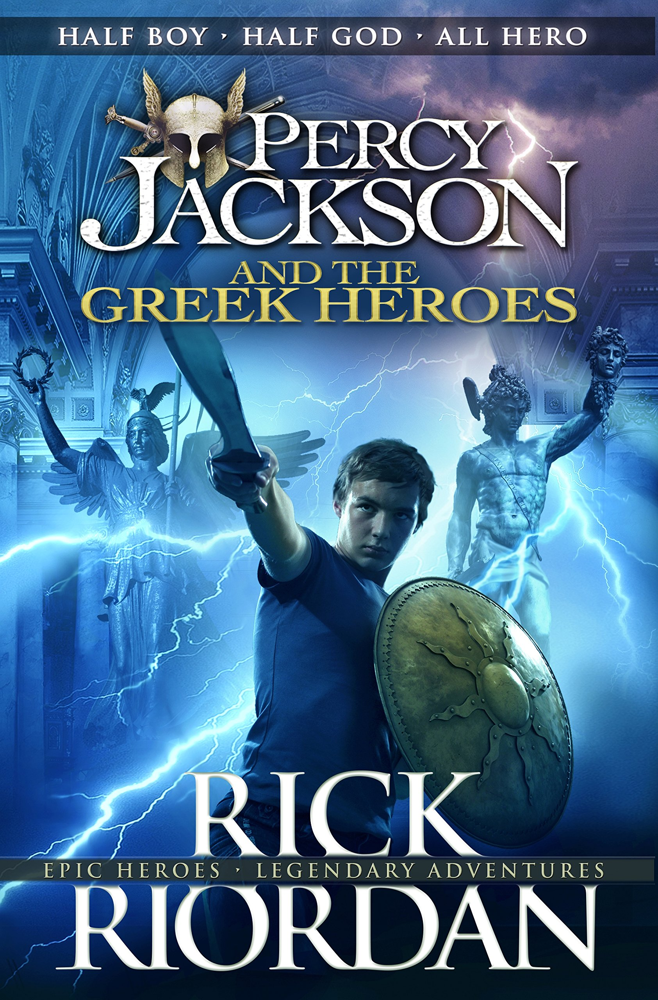
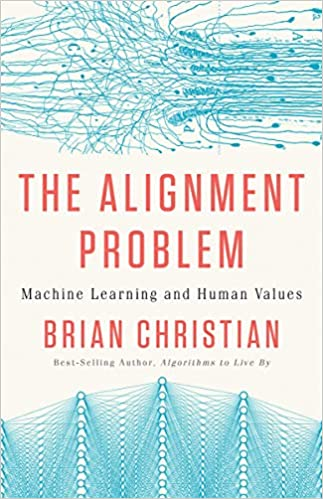
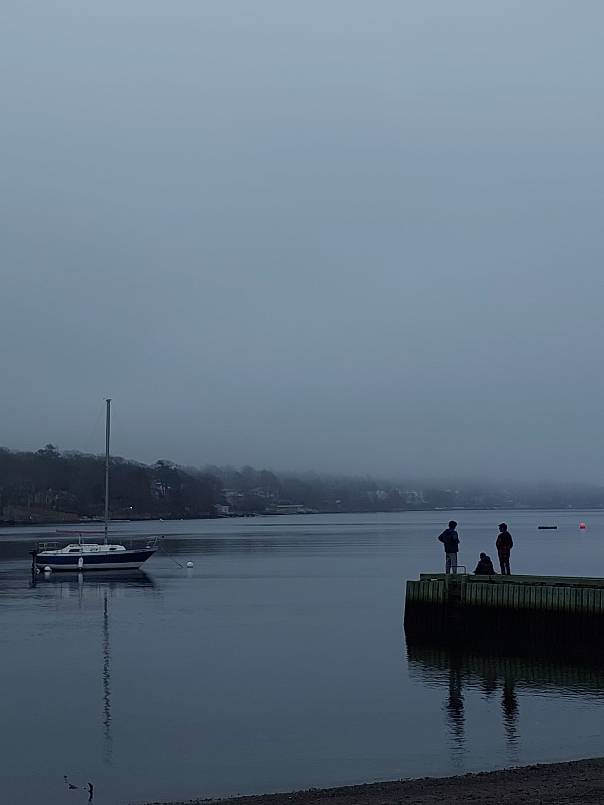
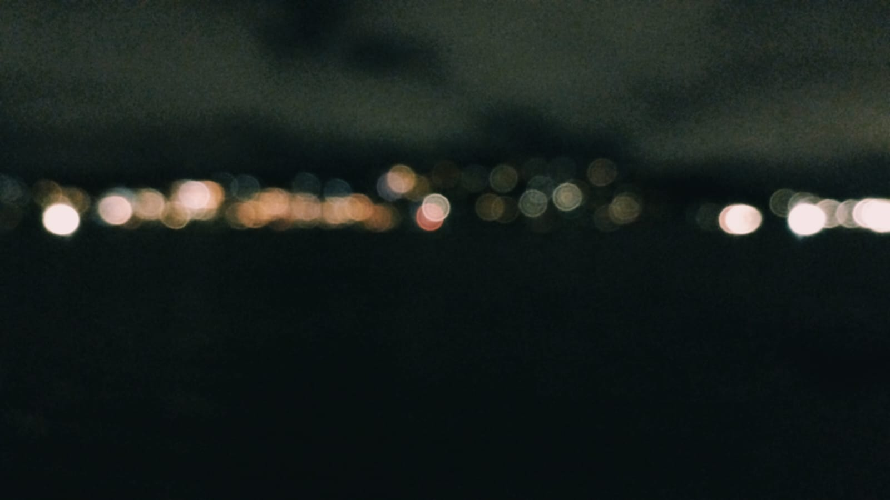

MY HOBBIES AND INTERESTS
hobbies and interests is an integral part of our lives and showcase our motives and aspirations in life.
I consider my interests and hobbies as very important and try to put in my best efforts to persue them
and integrate the into my daily routine and schedule.
- Following are my hobbies:
- Reading Books:
- Percy Jackson And The Greek Heroes by Rick Riordan  Click here to purchase the book online
- Dune by Frank Herbert
- The Alignment Problem by Brian Christian  Click here to purchase the book online
- Sports and Outdoor Games:
- Athletics
- Swimming
- Soccer
- Basketball
- Badminton
- Cricket
- Photography:
- 
- 
- Listening to songs:
- Areas of Interest:
Reading books has been my favourite hobby since childhood.
Here are a few awesome books that I have read in the past few years:
 Click here to purchase the book online
Click here to purchase the book online
Sports has always been an integral part of my life and has also supported me in the form of stress relief and recreation.
Following are a few forms of sports and outdoor games that I love the most:
Sice I was a small kid, I always had the knack of clicking pictures of everything that I saw around myself.
This was one of the few hobbies that I developed without knowing. I have enjoyed capturing all kinds of
moments of my life and I would love to do so in the future. Here are a few pictures that I recently captured:
Listening to songs has sorts of now become a habit for me. It helps me in concentration and I usually listen
to songs while studying. I love listening to a broad genre of music but here is an audio clip of one of my favourite songs:
Two fields of technology, that is Artificial Intelligence and Aerospace have had hooked me up for the many-many
hours of the recent days. Aerospcae Industry got to my liking during my time at the elementary school.
Everytime an aeroplane flew past the sky, I would gaze and stare at them in awe. Infact, I had immediately fallen
in love with the aeroplanes the first time I saw them!!
Here is a link to a webpage on Aerospace industry that I have made out of my hert's content!!
My wonderland of aerospace!!
Artificial Intelligence is something whic caught my attention recently. During my first semester at Dalhousie University
the course ASSC 1800 had a few interesting readings that dealt with Artificial Intelligence which helped me get exposed
to this rather amusing and interesting field of Computer Science. Here is a link to the webpage that I created on
Artificial Intelligence to showcase it's beauty so that, hopefully, you can fall in love with it aswell!!
The future that fascinates me: artificial intelligence